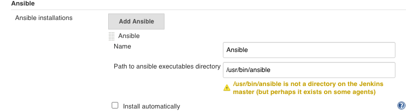

第三节 Jenkins集成Ansibe实现自动化部署
1、Ansible介绍
Ansible采用了与Puppet , Chef不一样的解决方案，不需要在受控机器上安装额外的客户端软件。原因是Ansible使用的是SSH协议与受控机器进行通信的，一般服务器默认有SSH服务。 Ansible也因此被称为agentless（去客户端的）。
Ansible也不像Puppet、Chef那样需要在一台相对稳定的机器上安装一个主控程序，好让所有的受控机器连接上来。只要是安装了Ansible的机器就可以作为主控机器，比如工作时用的电脑.
Puppet和Chef都自己做了一套DSL，而Ansible使用YAML格式作为自己的DSL格式。
笔者认为这是非常聪明的设计一：
- 一是大家都熟悉YAML格式；
- 二是不需要自己设计DSL;
- 三是不用自己写编译器(
YAML可以直接映射到Python对象）。
Ansible将部署逻辑放在一个称为“playbook”的YAML文件中。通常，文件名是playbook.yml
---
- hosts: web
tasks:
— name: install nginx
apt: name=nginx state=latest
— hosts: db
tasks:
— name: install mysql
yum: name={{item}}
with_items:
— 'mysql—common'
— 'mysql—client'
— 'mysql—server'
组织受控机器的逻辑被放在Inventory文件中。它是ini格式的默认文件名为hosts
[web]
192.168.33.10
[db]
192.168.33.11
只要运行
ansible-playbook --inventory hosts --user vagrant --ask-pass playbook, yml命令，输入SSH登录时用户vagrant的密码，就可以执行我们描述好的部署逻辑。为简单起见，我们是用户名和密码方式登录。
2、Ansible安装与集成
Jenkins与Ansible集成能让Jenkins执行ansible命令。
是具体步骤如下：
- (1）安装
Ansible插件 - (2）在主控机器上安装
Ansible井设置不进行host key检查。
sudo yum install epel-release
sudo yum -y install ansible
$ ansible --version
ansible 2.9.10
config file = /etc/ansible/ansible.cfg
configured module search path = [u'/home/vagrant/.ansible/plugins/modules', u'/usr/share/ansible/plugins/modules']
ansible python module location = /usr/lib/python2.7/site-packages/ansible
executable location = /usr/bin/ansible
python version = 2.7.5 (default, Apr 9 2019, 14:30:50) [GCC 4.8.5 20150623 (Red Hat 4.8.5-36)]
主控机器指的是真正执行ansible命令的机器，也就是Jenkins。我们需要在主控机器上自行安装Ansible,然后修改主控机器的Ansible配置，不进行host key检查
cat /etc/ansible/ansible.cfg
[defaults]
host_key_checking = False
如果要求安全级别高，则应该提前将所有受控机器的fingerprint放到主控机器的knowhosts 文件中。
- (3）在
Jenkins上进人Manage Jenkins -> Global Tool Configuration-> Ansible配置页面配置Ansible的执行路径.
我们可以同时添加多个Ansible版本。请留意Name字段的滇后面介绍的ansiblePlaybook步骤会使用到。
- (4）在
Jenkins上添加登录受控机器的凭证。Ansible与受控机器连接的凭证需要我们在Jenkins手动添加。根据项目的实际清况可以选择使用用户名和密码的方式或者用户名和密钥的

2-1 简单集成ansible 与 SharedLibrary
cd /etc/ansible
sudo vim hosts
[jabox]
127.0.0.1 ansible_connection=local
ansible -m ping localhost
127.0.0.1 | SUCCESS => {
"ansible_facts": {
"discovered_interpreter_python": "/usr/bin/python"
},
"changed": false,
"ping": "pong"
}
SharedLibrary
JenkinslibTest/src/org/devops/deploy.groovy
package org.devops
//salt stack
def SaltDeploy(host,func){
sh "sudo salt ${host} ${func}"
}
def AnsibleDeploy(host,func){
sh "ansible ${host} ${func}"
}
Pipeline
#!groovy
@Library('jenkinslib@master') _
def build = new org.devops.buildtools()
def deploy = new org.devops.deploy()
pipeline {
agent { node { label "hostmachine" }}
parameters {
choice(name: 'buildType', choices: 'mvn\nant\ngradle\nnpm', description: 'Please chose your build tool')
choice(name: 'buildShell', choices: '-v\nclean package\nclean install\nclean test', description: 'Please chose your build command')
choice(name: 'deployHosts', choices: 'jabox', description: 'Please chose your salt minion')
}
stages{
stage('build-deploy') {
steps {
script {
build.Build(buildType,buildShell)
deploy.SaltDeploy("${deployHosts}","test.ping")
deploy.AnsibleDeploy("${deployHosts}","-m ping")
}
}
}
}
}
...
[Pipeline] tool
[Pipeline] sh
+ /opt/maven/bin/mvn -v
Apache Maven 3.6.3 (cecedd343002696d0abb50b32b541b8a6ba2883f)
Maven home: /opt/maven
Java version: 1.8.0_252, vendor: Oracle Corporation, runtime: /usr/lib/jvm/java-1.8.0-openjdk-1.8.0.252.b09-2.el7_8.x86_64/jre
Default locale: en_US, platform encoding: UTF-8
OS name: "linux", version: "3.10.0-957.12.2.el7.x86_64", arch: "amd64", family: "unix"
[Pipeline] sh
+ sudo salt jabox test.ping
jabox:
True
[Pipeline] sh
+ ansible jabox -m ping
127.0.0.1 | SUCCESS => {
"ansible_facts": {
"discovered_interpreter_python": "/usr/bin/python"
},
"changed": false,
"ping": "pong"
}
[Pipeline] }
[Pipeline] // script
[Pipeline] }
[Pipeline] // stage
[Pipeline] }
[Pipeline] // node
[Pipeline] End of Pipeline
Finished: SUCCESS
2-2 简单集成ansible playbook 与 Jenkins
部署目录如下
$ cd orkspace/workspace/chap4-ansible2
$ tree .
.
├── hosts
└── playbook.yml
0 directories, 2 files
playbook.yml
---
- hosts: localhost
tasks:
- debug: msg="{{ lookup('env','BUILD_TAG') }}"
hosts 文件
[localhost]
127.0.0.1 ansible_connection=local
Jenkinsfile内容如下
pipeline {
agent { node { label "hostmachine" }}
stages{
stage('AnsibleDeploy') {
steps {
ansiblePlaybook(
playbook: "${env.WORKSPACE}/playbook.yml",
inventory: "${env.WORKSPACE}/hosts",
)
}
}
}
}
打印日志
Running on hostmachine in /home/vagrant/workspace/workspace/chap4-ansible2
[Pipeline] {
[Pipeline] stage
[Pipeline] { (AnsibleDeploy)
[Pipeline] ansiblePlaybook
[chap4-ansible2] $ ansible-playbook /home/vagrant/workspace/workspace/chap4-ansible2/playbook.yml -i /home/vagrant/workspace/workspace/chap4-ansible2/hosts
PLAY [localhost] ***************************************************************
TASK [Gathering Facts] *********************************************************
ok: [127.0.0.1]
TASK [debug] *******************************************************************
ok: [127.0.0.1] => {
"msg": "jenkins-chap4-ansible2-9"
}
PLAY RECAP *********************************************************************
127.0.0.1 : ok=2 changed=0 unreachable=0 failed=0 skipped=0 rescued=0 ignored=0
3、Ansible插件详解
3-1 ansibilePlaybook步骤
ansiblePlaybook步骤除支持 playbook,inventory, credetialsId三个参数外，还支持以下参数。
installation：字符串类型，值为前面设置的Name字段的值。用于指定不同版本的AnsiblevaultCredentialsld:Ansible vault密码在Jenkins中的凭证ID，它相当于--vault一password-file参数disabieHostKeychecking: 布尔类型，是否进行host key检查。become：布尔类型, 在执行操作时是否加上sudo,它相当于ansible命令行的--become参数。becorneUser: 字符串类型,切换到超级管理员用户名,默认是：root。它相当于ansible命令行的--become-user参数。limlt：字符串类型, 指定执行的主机。相当于ansible命令行的-l参数。多个主机之间使用逗号分隔tags：指定执行打上特定tag的任务。它相当于ansible命令行的-t参数。多个tag之间使用逗号分隔skippedTags参数。字符串类型, 指定跳过哪些tag的任务,它相当于ansible命令行的--skip-tags参数，多个tag之间使用逗号分隔。StartAtTask: 字符串类型, 从指定任务开始执行。它相当于ansible命令行的--start-at-task参数forks: 并行执行的进程数。相当干ansible命令行的-f参数extras: 字符串类型, 扩展参数。当ansiblePlaybook步骤的参数无法满足需求时，可以使用此参数，例如extras: '--syntax-check'extrasVars:List<org.jenkinsci.plugins.ansible.ExtraVar>类型，扩展变量。它相当于ansible命令行的-e参数, 格式如下
extraVars: [
<key>: '<value>',
<key>: [value: '<value>', hidden: true|false]
]
extraVars支持hidden属性，当其值为true时，在执行日志中会隐藏参数值。
我们来看一下完整的代码示例。
pipeline {
agent any
stages {
stage('Syntax check ansible playbook'){
steps {
ansiblePlaybook(
disableHostKeyChecking: true,
playbook: "${env.WORKSPACE}/playbook.yml",
inventory: "${env.WORKSPACE}/hosts",
credentialsId: 'vagrant',
extras: '--syntax—check'
)
}
}
stage('Deploy') {
steps {
ansiblPlaybook(
disableHostKeyChecking: true,
playbook: "${env.WORKSPACE}/playbook.yml",
inventory: "${env.WORKSPACE}/hosts",
credentialsId: 'vagrant',
// skippedTags: 'debugtag'
forks: 2,
limit: 'example1,example',
tags: 'debugtag,testtag',
extraVars: [
login: 'mylogin'
secret_key: [value: 'g4fKkiEllpeF6pY05', hidden: true]
]
// startAtTask: 'task4'
)
}
}
}
}
ansibleplaybook步骤只是Ansible插件提供的两个步骤中的一个还有ansibleVault步骤
3-2 ansibleVault步骤
放在配置文件中的MySQL连接密码想必是不希望如诉有人看见的。Ansible vault是Anaible 的一个特性,它能帮助我们加解密配置文件或者某个配置项
在ansiblePlaybook步骤中vaultCradentialsId参数的作用就是在ansible-playbook执行过程中，会对事先放在playbook中的密义进行解密解密需要密码vaultCradentialsId就是我们事先存储在Jenkins中的密码的凭证ID。
而ansibleVault步骤所做的事情就是执行Ansible提供的ansible-vault命令。该命令通常用于对敏感数据进行加解密。
ansibleVault支持以下参数。
-
action(必填：字符串类型，ansibleVault执行的操作类型。包括：encrypt加密文件 。encrypt_string加密字符rekey使用一个新的密码,进行加密但需要旧的密码ecceypt解密
-
content：字符串类型, 加密文本时的字符串内容。 input：字符串类型追加到ansible-vault命令行后面的参数installation：字符串类型与ansibilePlaybook步骤的installation参数的作用一样。newVaultCredentialsld：字符串类型, 使用新的凭证进行重新加密相当于ansible-vault命令的--new-vault-password-file参数output符串类型，追加到ansible-vault命令行后面的参数但是会放在input参数之前vaultCradentialsId（必填）：字符串类型，密码的凭证lD。
接下来，我们看看ausible Vault应用场景的代码示例 。
对文本内容进行加密
ansibleVault(
action: "encrypt_string",
content: "${secret}",
vaultCradentialsId: "vaultid",
)
对于content参数，也常通过参数化传入，而不是这样写的
- 加密文件
ansibleVault(
action: "encrypt",
vaultCredentialsId: "vaultid",
input: "./vault--test.yml"
)
- 更换
vault密码
ansibleVault(
action:"rekey",
vaultCredentialsId:"vaultid",
newVaultCredentialsId:"vaultid2",
input: "./vault-test.yml"
)
- 解密文件
ansibleVault(
action:"decrypt",
vaultCredentialsId:"vaultid2",
input: "./vault-test.yml"
)